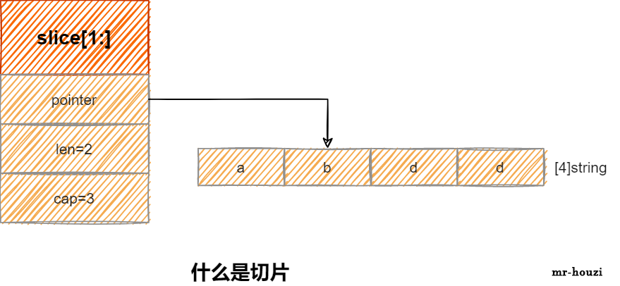
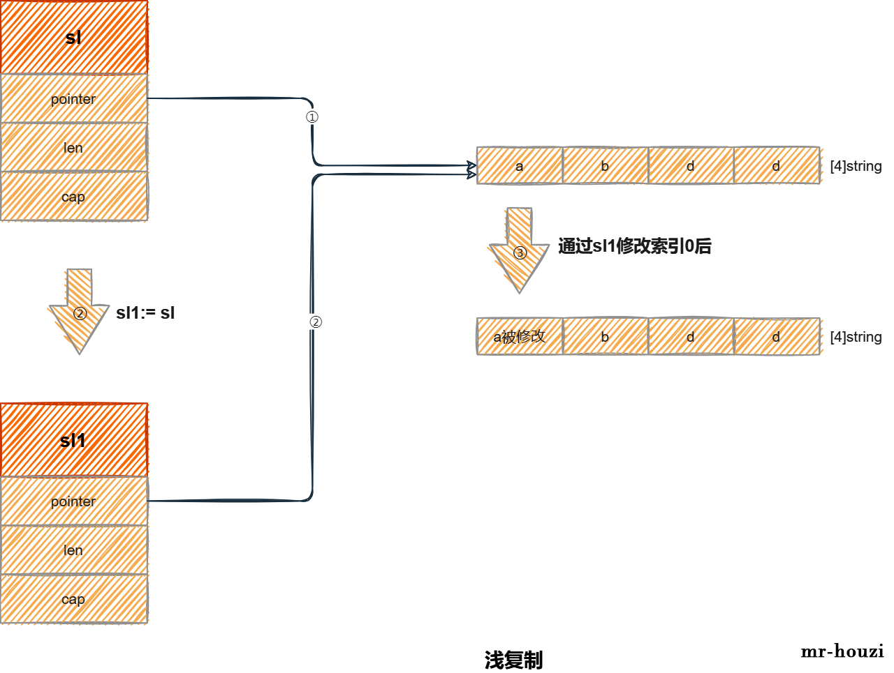
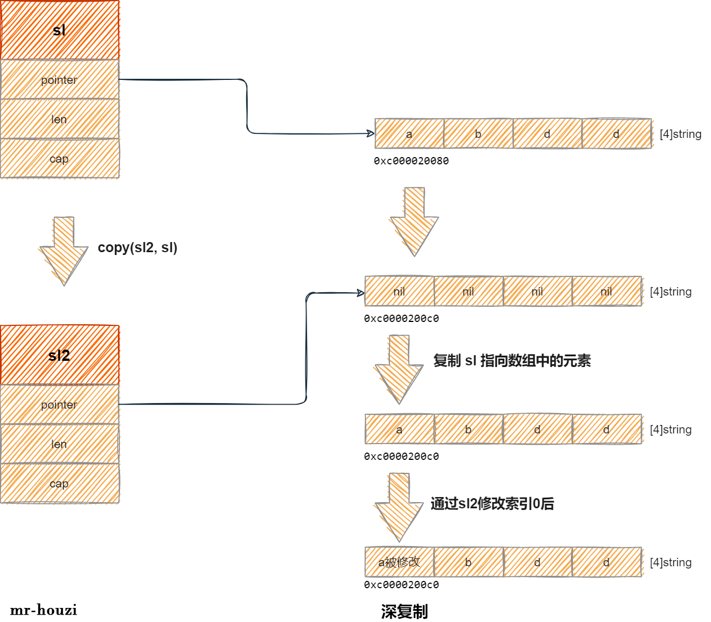
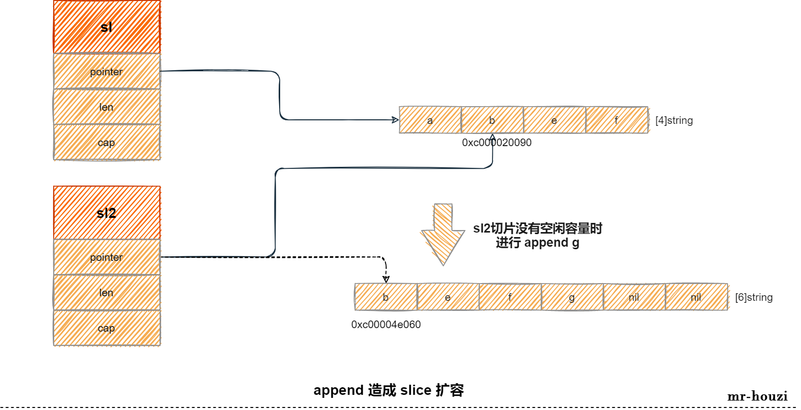
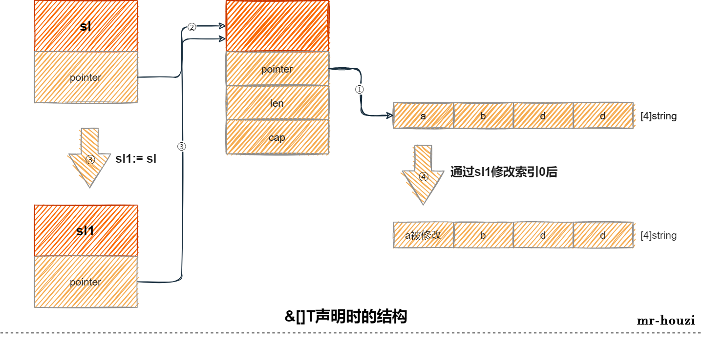

整明白 Golang slice 声明方式、浅复制现象、深复制、append操作
什么是切片
切片（slice）是对数组一个连续片段的引用。切片是一个引用类型，它实际并不存储元素，它只是标识了数组上的某一个连续片段。
数组在内存中是一连串的内存空间，每个元素占据一块内存。
切片的数据结构是一个结构体，结构体内由三个参数。
- Pointer 指向数组中它要表示的片段的起始元素；
- len 长度
- cap 最大容量
type slice struct {
array unsafe.Pointer
len int
cap int
}
slice示意图：

声明方式
slice 有[]T{}、new 、make三种声明方式。具体有哪些区别将会根据下面实例进行分析。
sl := []string{"a", "b", "c", "d"}
sl := make([]string, 4)
sl := new([]string)
*sl = make([]string, 4)
浅复制现象
赋值过程中发生的浅复制
来看实例代码
func example1a() {
sl := []string{"a", "b", "c", "d"}
fmt.Printf("sl:%+v 变量（或变量结构某个指针）指向地址（变量值）：%p 变量地址：%p\n", sl, sl, &sl)
// 浅复制1：赋值过程中发生的浅复制
sl1 := sl
fmt.Printf("sl1:%+v 变量（或变量结构某个指针）指向地址（变量值）：%p 变量地址：%p\n", sl1, sl1, &sl1)
sl1[0] = "a被修改"
fmt.Println("================ sl1 被修改后 ================")
fmt.Printf("sl:%+v 变量（或变量结构某个指针）指向地址（变量值）：%p 变量地址：%p\n", sl, sl, &sl)
fmt.Printf("sl1:%+v 变量（或变量结构某个指针）指向地址（变量值）：%p 变量地址：%p\n", sl1, sl1, &sl1)
}
sl:[a b c d] 变量（或变量结构某个指针）指向地址（变量值）：0xc000020080 变量地址：0xc000004078
sl1:[a b c d] 变量（或变量结构某个指针）指向地址（变量值）：0xc000020080 变量地址：0xc0000040c0
================ sl1 被修改后 ================
sl:[a被修改 b c d] 变量（或变量结构某个指针）指向地址（变量值）：0xc000020080 变量地址：0xc000004078
sl1:[a被修改 b c d] 变量（或变量结构某个指针）指向地址（变量值）：0xc000020080 变量地址：0xc0000040c0
sl 声明得到了一个切片，并在创建了一个数组，sl 切片的内部指针指向这个数组。
sl1 由 sl 赋值而来，sl1 得到了一个和 sl 一样的切片，同样它的内部指针也指向最初创建的数组。
当对 sl1 的索引 0 进行修改后，打印 sl 对应的元素值也将发生变化。

通常，在没有了解切片结构的开发者，会误以为 sl1 与 sl 是完全独立，互相的修改并不影响对方。实际上，它们确实是两个完全独立的内存，但是它们的内部结构都指向了同一个数组。
切片并不存储数组元素，它只是搬运工，标识了数组上的片段区间。
所以， sl1[0] 的修改实际上是修改的 sl1 索引0 对应的在数组上的元素值。当访问 sl 时，它读取自己在数组上的片段时，也将受到影响。
这一现象也被称之为浅复制。
函数形参中发生的浅复制
浅复制不只发生在变量赋值过程中，在调用函数实参传给形参的时候也在悄然发生。
func example1b() {
sl := []string{"a", "b", "c", "d"}
fmt.Printf("sl:%+v 变量（或变量结构某个指针）指向地址（变量值）：%p 变量地址：%p\n", sl, sl, &sl)
// 浅复制2：函数形参中发生的浅复制
func (slParam []string) {
fmt.Printf("slParam:%+v 变量（或变量结构某个指针）指向地址（变量值）：%p 变量地址：%p\n", slParam, slParam, &slParam)
slParam[0] = "a被修改"
fmt.Println("================ slParam 被修改后 ================")
fmt.Printf("sl:%+v 变量（或变量结构某个指针）指向地址（变量值）：%p 变量地址：%p\n", sl, sl, &sl)
fmt.Printf("slParam:%+v 变量（或变量结构某个指针）指向地址（变量值）：%p 变量地址：%p\n", slParam, slParam, &slParam)
}(sl)
// 外部的 sl 也将受到变化
fmt.Printf("sl:%+v 变量（或变量结构某个指针）指向地址（变量值）：%p 变量地址：%p\n", sl, sl, &sl)
}
sl:[a b c d] 变量（或变量结构某个指针）指向地址（变量值）：0xc000020080 变量地址：0xc000004078
slParam:[a b c d] 变量（或变量结构某个指针）指向地址（变量值）：0xc000020080 变量地址：0xc0000040c0
================ slParam 被修改后 ================
sl:[a被修改 b c d] 变量（或变量结构某个指针）指向地址（变量值）：0xc000020080 变量地址：0xc000004078
slParam:[a被修改 b c d] 变量（或变量结构某个指针）指向地址（变量值）：0xc000020080 变量地址：0xc0000040c0
sl:[a被修改 b c d] 变量（或变量结构某个指针）指向地址（变量值）：0xc000020080 变量地址：0xc000004078
在函数内部对形参切片的修改，将影响函数外实参。看过实例1a后，相信你对于这个结果并不会太震惊。
切片实参和形参是两个不同变量，但它们拥有同样的内部结构，内部结构中的指针依然是分别指向数组。
深复制操作
实例1a和1b中展示了切片的浅复制现象，对于如何解决浅复制问题在本例中将会解答。
func example3() {
sl := []string{"a", "b", "c", "d"}
fmt.Printf("sl:%+v 变量（或变量结构某个指针）指向地址（变量值）：%p 变量地址：%p\n", sl, sl, &sl)
// 深复制：通过 copy 解决赋值过程中发生的浅复制
sl2 := make([]string, 4)
fmt.Printf("sl2:%+v 变量（或变量结构某个指针）指向地址（变量值）：%p 变量地址：%p\n", sl2, sl2, &sl2)
copy(sl2, sl)
fmt.Println("================ copy 复制后 ================")
fmt.Printf("sl2:%+v 变量（或变量结构某个指针）指向地址（变量值）：%p 变量地址：%p\n", sl2, sl2, &sl2)
fmt.Printf("sl:%+v 变量（或变量结构某个指针）指向地址（变量值）：%p 变量地址：%p\n", sl, sl, &sl)
sl2[0] = "a被修改了"
fmt.Println("================ sl2 被修改后 ================")
fmt.Printf("sl2:%+v 变量（或变量结构某个指针）指向地址（变量值）：%p 变量地址：%p\n", sl2, sl2, &sl2)
fmt.Printf("sl:%+v 变量（或变量结构某个指针）指向地址（变量值）：%p 变量地址：%p\n", sl, sl, &sl)
}
sl:[a b c d] 变量（或变量结构某个指针）指向地址（变量值）：0xc000020080 变量地址：0xc000004078
sl2:[ ] 变量（或变量结构某个指针）指向地址（变量值）：0xc0000200c0 变量地址：0xc0000040c0
================ copy 复制后 ================
sl2:[a b c d] 变量（或变量结构某个指针）指向地址（变量值）：0xc0000200c0 变量地址：0xc0000040c0
sl:[a b c d] 变量（或变量结构某个指针）指向地址（变量值）：0xc000020080 变量地址：0xc000004078
================ sl2 被修改后 ================
sl2:[a被修改了 b c d] 变量（或变量结构某个指针）指向地址（变量值）：0xc0000200c0 变量地址：0xc0000040c0
sl:[a b c d] 变量（或变量结构某个指针）指向地址（变量值）：0xc000020080 变量地址：0xc000004078
本例中通过 copy 方法深复制操作解决了赋值过程中的浅复制现象。sl2 和 sl 将是两个完全不同的切片，并且其内部指针也将指向两个不同的数组。这样，一方的修改就不会影响另一方了。

append 操作
本例中展示了 append 操作。
func example4() {
sl := []string{"a", "b", "c", "d"}
sl2 := sl
fmt.Printf("sl:%+v 变量（或变量结构某个指针）指向地址（变量值）：%p 变量地址：%p\n", sl, sl, &sl)
fmt.Printf("sl2:%+v 变量（或变量结构某个指针）指向地址（变量值）：%p 变量地址：%p\n", sl2, sl2, &sl2)
fmt.Printf("sl2:cap:%d,len:%d\n", cap(sl2), len(sl2))
fmt.Println("================ 数组每个元素对应的地址 ================")
fmt.Printf("a:%p b:%p c:%p d:%p \n", &sl[0], &sl[1], &sl[2], &sl[3])
sl2 = sl2[1:2]
fmt.Println("================ sl2[1:2] 使切片 sl2 指向了 b 元素 ================")
fmt.Printf("sl2:%+v 变量（或变量结构某个指针）指向地址（变量值）：%p 变量地址：%p\n", sl2, sl2, &sl2)
fmt.Printf("sl2:cap:%d,len:%d\n", cap(sl2), len(sl2))
sl2 = append(sl2[:1], "e")
fmt.Println("================ 切片还有空闲容量进行 append e ================")
fmt.Printf("sl2:%+v 变量（或变量结构某个指针）指向地址（变量值）：%p 变量地址：%p\n", sl2, sl2, &sl2)
fmt.Printf("sl:%+v 变量（或变量结构某个指针）指向地址（变量值）：%p 变量地址：%p\n", sl, sl, &sl)
sl2 = append(sl2, "f")
fmt.Println("================ 切片还有空闲容量进行 append f ================")
fmt.Printf("sl2:%+v 变量（或变量结构某个指针）指向地址（变量值）：%p 变量地址：%p\n", sl2, sl2, &sl2)
fmt.Printf("sl:%+v 变量（或变量结构某个指针）指向地址（变量值）：%p 变量地址：%p\n", sl, sl, &sl)
fmt.Printf("sl2:cap:%d,len:%d\n", cap(sl2), len(sl2))
sl2 = append(sl2, "g")
fmt.Println("================ 切片没有空闲容量进行 append g ================")
fmt.Printf("sl2:%+v 变量（或变量结构某个指针）指向地址（变量值）：%p 变量地址：%p\n", sl2, sl2, &sl2)
fmt.Printf("sl:%+v 变量（或变量结构某个指针）指向地址（变量值）：%p 变量地址：%p\n", sl, sl, &sl)
fmt.Println("================ 发生扩容后 ================")
fmt.Printf("sl2:cap:%d,len:%d\n", cap(sl2), len(sl2))
fmt.Printf("sl2:%+v 变量（或变量结构某个指针）指向地址（变量值）：%p 变量地址：%p\n", sl2, sl2, &sl2)
sl2 = sl2[:6]
fmt.Printf("sl2:%+v 变量（或变量结构某个指针）指向地址（变量值）：%p 变量地址：%p\n", sl2, sl2, &sl2)
fmt.Println("================ 新数组每个元素对应的地址 ================")
fmt.Printf("b:%p c:%p e:%p f:%p \n", &sl2[0], &sl2[1], &sl2[2], &sl2[3])
}
sl:[a b c d] 变量（或变量结构某个指针）指向地址（变量值）：0xc000020080 变量地址：0xc000004078
sl2:[a b c d] 变量（或变量结构某个指针）指向地址（变量值）：0xc000020080 变量地址：0xc000004090
sl2:cap:4,len:4
================ 数组每个元素对应的地址 ================
a:0xc000020080 b:0xc000020090 c:0xc0000200a0 d:0xc0000200b0
================ sl2[1:2] 使切片 sl2 指向了 b 元素 ================
sl2:[b] 变量（或变量结构某个指针）指向地址（变量值）：0xc000020090 变量地址：0xc000004090
sl2:cap:3,len:1
================ 切片还有空闲容量进行 append e ================
sl2:[b e] 变量（或变量结构某个指针）指向地址（变量值）：0xc000020090 变量地址：0xc000004090
sl:[a b e d] 变量（或变量结构某个指针）指向地址（变量值）：0xc000020080 变量地址：0xc000004078
================ 切片还有空闲容量进行 append f ================
sl2:[b e f] 变量（或变量结构某个指针）指向地址（变量值）：0xc000020090 变量地址：0xc000004090
sl:[a b e f] 变量（或变量结构某个指针）指向地址（变量值）：0xc000020080 变量地址：0xc000004078
sl2:cap:3,len:3
================ 切片没有空闲容量进行 append g ================
sl2:[b e f g] 变量（或变量结构某个指针）指向地址（变量值）：0xc00004e060 变量地址：0xc000004090
sl:[a b e f] 变量（或变量结构某个指针）指向地址（变量值）：0xc000020080 变量地址：0xc000004078
================ 发生扩容后 ================
sl2:cap:6,len:4
sl2:[b e f g] 变量（或变量结构某个指针）指向地址（变量值）：0xc00004e060 变量地址：0xc000004090
sl2:[b e f g ] 变量（或变量结构某个指针）指向地址（变量值）：0xc00004e060 变量地址：0xc000004090
================ 新数组每个元素对应的地址 ================
b:0xc00004e060 c:0xc00004e070 e:0xc00004e080 f:0xc00004e090
1.最初切片刚创建的时候，sl、sl2 切片内部指针指向数组第一个元素a。
2.经过 sl2 = sl2[1:2] 后，sl2 指向了数组中的第二个 b 元素。
3.往 sl2 切片 append e 时，此时 sl2 还有空闲空间（cap-len>0），append 操作直接修改了数组元素 c => e。
4.往 sl2 切片 append f 时，此时 sl2 依然还有空闲空间（cap-len>0），append 操作直接修改了数组元素 d => f。

5.往 sl2 切片 append g 时，此时 sl2 已经没有空闲空间了（cap-len=0），append 操作会导致扩容。由于数组空间是固定不变的，扩容将使 sl2 指向新的数组。sl2 第一个元素仍然是 b，但它指向地址已经不再是最初数组中元素b的地址了，这一点可以证明发生了扩容，并产生了新数组。
实际上 sl2 仅需要 4 个空间，对应的新数组却提供了 6 个空间，至于这点应该和切片的扩容机制有关，后续文章可能会继续深入探讨。
其余几种 slice 声明和操作方式
&[]T
sl := &[]string{"a", "b", "c", "d"}
// 等价于
s := []string{"a", "b", "c", "d"}
sl := &s
sl 将得到的是指向切片的地址，它是一个指针，指向切片，而切片内部指针指向数组。

func example2() {
sl := &[]string{"a", "b", "c", "d"}
fmt.Printf("sl:%+v 变量（或变量结构某个指针）指向地址（变量值）：%p 变量地址：%p\n", sl, sl, &sl)
sl1 := sl
fmt.Printf("sl1:%+v 变量（或变量结构某个指针）指向地址（变量值）：%p 变量地址：%p\n", sl1, sl1, &sl1)
*sl1 = append(*sl1, "e")
fmt.Println("================ append 后 ================")
fmt.Printf("sl1:%+v 变量（或变量结构某个指针）指向地址（变量值）：%p 变量地址：%p\n", sl1, sl1, &sl1)
fmt.Printf("sl:%+v 变量（或变量结构某个指针）指向地址（变量值）：%p 变量地址：%p\n", sl, sl, &sl)
(*sl1)[0] = "a被修改"
fmt.Println("================ sl1 被修改后 ================")
fmt.Printf("sl1:%+v 变量（或变量结构某个指针）指向地址（变量值）：%p 变量地址：%p\n", sl1, sl1, &sl1)
fmt.Printf("sl:%+v 变量（或变量结构某个指针）指向地址（变量值）：%p 变量地址：%p\n", sl, sl, &sl)
}
sl:&[a b c d] 变量（或变量结构某个指针）指向地址（变量值）：0xc000004078 变量地址：0xc000006028
sl1:&[a b c d] 变量（或变量结构某个指针）指向地址（变量值）：0xc000004078 变量地址：0xc000006038
================ append 后 ================
sl1:&[a b c d e] 变量（或变量结构某个指针）指向地址（变量值）：0xc000004078 变量地址：0xc000006038
sl:&[a b c d e] 变量（或变量结构某个指针）指向地址（变量值）：0xc000004078 变量地址：0xc000006028
================ sl1 被修改后 ================
sl1:&[a被修改 b c d e] 变量（或变量结构某个指针）指向地址（变量值）：0xc000004078 变量地址：0xc000006038
sl:&[a被修改 b c d e] 变量（或变量结构某个指针）指向地址（变量值）：0xc000004078 变量地址：0xc000006028
make
make 方式创建切片，make 初始化了数组空间大小，元素初始值默认为零值。
func example5() {
sl := make([]string, 4)
fmt.Printf("sl:%+v 变量（或变量结构某个指针）指向地址（变量值）：%p 变量地址：%p\n", sl, sl, &sl)
sl[0] = "a"
sl[1] = "b"
sl[2] = "c"
sl[3] = "d"
fmt.Printf("sl:%+v 变量（或变量结构某个指针）指向地址（变量值）：%p 变量地址：%p\n", sl, sl, &sl)
sl = append(sl, "e", "f", "g", "h")
fmt.Printf("sl:%+v 变量（或变量结构某个指针）指向地址（变量值）：%p 变量地址：%p\n", sl, sl, &sl)
}
sl:[ ] 变量（或变量结构某个指针）指向地址（变量值）：0xc000020080 变量地址：0xc000004078
sl:[a b c d] 变量（或变量结构某个指针）指向地址（变量值）：0xc000020080 变量地址：0xc000004078
sl:[a b c d e f g h] 变量（或变量结构某个指针）指向地址（变量值）：0xc00010a000 变量地址：0xc000004078
new
new 创建切片将返回地址，sl 此时拿到的仅是地址，切片对应的数组甚至都没有初始化，此时无法使用这个切片。
直到经过*sl = make([]string, 4)，之后才能正常通过指针操作切片。
func example6() {
sl := new([]string)
fmt.Printf("sl:%+v 变量（或变量结构某个指针）指向地址（变量值）：%p 变量地址：%p\n", sl, sl, &sl)
// new 只拿到了一个指针，并没法使用这个slice，必须经过 make 初始化后，才能使用
*sl = make([]string, 4)
fmt.Println("================ make 后 ================")
fmt.Printf("sl:%+v 变量（或变量结构某个指针）指向地址（变量值）：%p 变量地址：%p\n", sl, sl, &sl)
(*sl)[0] = "a"
(*sl)[1] = "b"
(*sl)[2] = "c"
(*sl)[3] = "d"
fmt.Println("================ 赋值后 ================")
fmt.Printf("sl:%+v 变量（或变量结构某个指针）指向地址（变量值）：%p 变量地址：%p\n", sl, sl, &sl)
*sl = append(*sl, "b")
fmt.Println("================ append 后 ================")
fmt.Printf("sl:%+v 变量（或变量结构某个指针）指向地址（变量值）：%p 变量地址：%p\n", sl, sl, &sl)
}
sl:&[] 变量（或变量结构某个指针）指向地址（变量值）：0xc000004078 变量地址：0xc000006028
================ make 后 ================
sl:&[ ] 变量（或变量结构某个指针）指向地址（变量值）：0xc000004078 变量地址：0xc000006028
================ 赋值后 ================
sl:&[a b c d] 变量（或变量结构某个指针）指向地址（变量值）：0xc000004078 变量地址：0xc000006028
================ append 后 ================
sl:&[a b c d b] 变量（或变量结构某个指针）指向地址（变量值）：0xc000004078 变量地址：0xc000006028
总结
- slice 有
[]T{}、new、make三种声明方式。 - slice 会在变量赋值时发生浅复制。
- copy() 可以让 slice 进行深复制。
- append 再操作切片时，切片空闲容量不足时会发生扩容。
end!